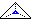
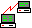

Laŭ R. M. Stallman kaj FSF, programaro kiun ĉiu ajn rajtas kopii, disdoni aŭ modifi; sekve, programaro disponigata kun siaj fonttekstoj. Tio ne signifas ke libera programaro nepre estu senpaga, oni rajtas ĝin vendi kondiĉe ke tio ne estigas limigojn je plua disponigeblo kaj uzeblo. Vd http://www.gnu.org/philosophy/free-sw.html. Kp nefermita fontteksto, ĉiesaĵo, publikaĵo.
Noto. La celata senco de «libera programaro» estas, ke «ĝi rajtigas la uzulon je iuj liberoj». Laŭ R. M. Stallman, la anglalingva kromsenco «senpaga programaro» estas kvankam ne malvera, tamen ne ĉefa karakterizaĵo. La esperantigo «libera programaro» estas rekomendita ĉe http://www.gnu.org/philosophy/words-to-avoid.html#Freeware.
Angle: free software
France: logiciel libre
Germane: freie Software
Ruse: свободные
программы
1998-06-29
 Variablo kiu en koncerna esprimo ne estas ligita variablo; ekz-e v en la esprimo
µx[r(x,v)=0]
Kp ligita variablo, malloka variablo.
Angle: free variable
France: variable libre
Ruse: свободная
переменная
1996-02-29
Kombino de literoj kiu en bona tipografio estas prezentata per unu signobildo. Plej ofte estas provizataj la ligaturoj fi, fl, ft. Iam ankaŭ kunmetitaj literoj (ekz-e la Latina «æ», la germana sozo «ß» ktp).
Noto. PIV1 donas nur medicinan signifon de la vorto.
Angle: ligature
France: digramme soudé, ligature
Ruse:
лигатура
1996-02-29
Datumstrukturo en kiu ĉiu ano havas ligilon (referencon) al la tujsekva ano (unudirekta ligillisto) aŭ du ligilojn referencantajn la ĵusantaŭan kaj la tujsekvan anojn (ambaŭdirekta ligillisto). En cikla ligillisto (ringa ligillisto) la lasta ano referencas la unuan; en sencikla ligillisto (rekta ligillisto) la lasta ano havas nulan referencon. Ligillistoj estas uzataj en fizika prezento (realigo) de liniaj listoj (ekzemplo: Interna prezento de grafeoj).
Angle: linked list
Ruse: цепной
список
1996-02-29
Rimedo por konekti elementojn en datumstrukturo (ligillisto, hiperteksto), aŭ komandojn aŭ subprogramojn. Estkiel ligilo povas servi adreso (referenco), modifilo aŭ komando.
Vd rekta ligilo, simbola ligilo; ankro, referenco.
Angle: link
Ruse: связь
1996-02-29
Variablo kiu en koncerna esprimo havas helpan rolon de interna parametro: iteracia nombrilo, kvantorhava variablo ktp; ekz-e x en la esprimo
µx[r(x,v)=0]
Kp libera variablo, loka variablo, propozicio.
Angle: bound variable
France: variable liée
Ruse: связанная
переменная
1996-02-29
Aranĝaĵo por bildigi signojn (ekz-e en poŝa kalkulilo) aŭ grafikaĵojn per molekuloj de neizotropa duonlikva substanco (havanta certajn ecojn de kristalo), aranĝataj per elektra kampo.
Vd reflekta ekrano, traluma ekrano.
Angle: liquid
crystal display, LCD
Ruse:
жидкокристаллический дисплей
1996-10-22
En konformiva tabelskemo de Paskalo, speco de formala parametro, indikanta la kurantan valoron de limo de parametra tabelo. En la korpo de sia proceduro aŭ funkcio limnomo aperas kiel nurlegebla variablo.
Angle: bound identifier
Ruse: идентификатор границы
1996-02-29
F estu orda aro. La supra (suba) limo de subaro P⊆F estas supra (resp. suba) baro m tia, ke ne ekzistas supra (suba) baro pli malgranda (resp. granda) ol m. Se m∈P, oni diras, ke m estas la maksimumo (minimumo) de P. Vd kompliko.
Angle: supremum; infimum
Ruse: грань
(2) lim*o —
En programlingvoj, la pleja aŭ la malpleja valoro de numerebla tipo, precipe kiam temas pri subvariejo aŭ indiclimo de tabelo.
Angle: bound
Ruse:
граница
1996-02-29
« 1 (Pri funkcio de unu aŭ pluraj argumentoj) Havanta la formon de unuagrada polinomo» [PIV1].
Noto. Do, lineara apartenas al la serio logaritma, lineara, kvadrata, kuba, eksponenta ktp, dum linia esprimas unudmensiecon: linia listo, linia ordo ktp.
Angle: linear
Ruse: линейный
1996-02-29
Studo de finidimensiaj vektoraj spacoj per algebraj kaj nombraj metodoj. La ĉefaj problemoj de tiu fako estas
Angle: (numerical) linear algebra
Ruse: линейная
алгебра
1998-08-17
Gramatika derivregulo estas lineara, se ĝia dekstra parto entenas ne pli ol unu sintaksan variablon. Senkunteksta gramatiko estas lineara, se ĉiu ĝia regulo estas lineara. Senkunteksta lingvo estas lineara, se ĝin generas lineara gramatiko. Ekz-e la lingvo
{ ab, aabb, aaabbb, aaaabbbbb, … aⁿbⁿ … }
estas lineara (sed ĝi ne estas regula lingvo). — Vd dekstre lineara gramatiko, hierarkio laŭ Ĉomski.
Noto. La epiteto lineara ŝuldiĝas al la ŝajna simileco de la derivreguloj de lineara gramatiko al la linearaj ekvacioj en matematiko.
Angle: (right-)linear grammar
Ruse: (право)линейная грамматика
1996-02-29
La ordo O(x). Kp linia ordo.
Angle: linear order
Ruse: линейный порядок
1996-02-29
Aŭtomato en kiu la longo de la memorrubando estas barita per lineara funkcio de la longo de la eniga rubando. Tiu tipo de aŭtomato estas interesa plie el la teoria vidpunkto: la lingvoj akceptataj de lineare barita aŭtomato estas priskribeblaj per kuntekstohavaj gramatikoj.
Angle: linear bounded acceptor
1996-02-29
Medio tra kiu la signaloj pasas de la sendilo al la ricevilo. Unu lineo servas por samtempe transsendi plurajn mesaĝojn, ĉiu el kiuj uzas apartan kanalon. Unu lineo povas havi multajn kanalojn.
Angle: line
Germane: Leitung
Ruse: линия связи
1996-02-29
«3 Ĉio, kio servas por esprimi pensojn aŭ sentojn … la algebra lingvo» [PIV1].
En matematiko «lingvo» praktike sinonimas kun kalkulo. En komputoscienco oni kutimas kontrastigi lingvojn naturajn kaj artefaritajn, kun tradicia rezervaĵo, ke [IFIP71]
la distingo estas nepreciza ĉar unue, ekzistas inventitaj «naturaj» lingvoj (ekz-e Esperanto), kaj due, iuj artefaritaj lingvoj estas, almenaŭ parte, nenio plia ol tre formaligitaj naturaj lingvoj.Evidente, en Esperanto mem ni ne povas esti tiom malzorgemaj pri la epiteto kiu misprezentas Esperanton; tial necesas precizigi la klasifikon.
La deveno de lingvo (natura, «sovaĝa» kontraste al artefarita, «kultura») propre ne koncernas komputosciencon.
La lingvojn misnomatajn artefaritaj oni povus pli trafe nomi formalaj lingvoj. Dum longa tempo tiu termino estis rezervita por sintakse formalaj lingvoj (ĉar la semantika aspekto longe restadis netuŝita); nuntempe tia limigo ŝajnas arkaikiĝinta; do, al tiu klaso apartenas ĉiuj programlingvoj, ĉar la lingvo komprenata de maŝino ĉiam estas formala (la maŝino ĝin interpretanta prezentas ĝian formalan difinon).
La klaso de neformalaj lingvoj estas tro larĝa, do laŭbezone oni povas precizigi: la homaj lingvoj (anstataŭ «naturaj lingvoj»); inter ili estas loko kaj por la angla, kaj por Esperanto. Tiaj lingvoj interesas artefaritan intelekton; en la tradicio de Esperanto la uzado de la termino atesteblas per la artikolaro «Kibernetiko de la homa lingvo kaj aliaj internacilingvaj aktoj de la IX-a Internacia Kongreso de Kibernetiko», Budapest–Paderborn, 1981.
Angle: language
Ruse: язык
1996-02-29
Operacio super formala lingvo, kiu el lingvo L faras la lingvon
L* = { Λ } + L + LL + LLL + LLLL + …
(fermo de lingvopotencigo, vd ĉe regula esprimo). Iam oni ankaŭ konsideras la «rigore pozitivan» lingvoiteracion
L⁺ = L + L² + L³ + …
(angle Kleene plus). Oni ankaŭ povus difini lingvoiteracion kiel fermon de kroĉo super L — kroĉfermon.
Priskribante la sintakson de programlingvo oni nun preferas signi la iteracion per vinkuloj, ekz-e
nomo = litero { litero | cifero }. Angle: Kleene closure, Kleene star, star closure, iteration
1996-02-29
Datumstrukturo kiu estas sekvenco da ajnaj datumanoj, datumtipo kies ĉefa struktura principo estas linia (t.e. unudimensia, kp linia ordo) aranĝo de la elementoj.
Linia listo aperas kiam temas pri finia sekvenco varilonga, ebliganta fari intermetojn, forprenojn, diversajn serĉojn. Ekz-e povas temi pri atendovico de laboroj en operaciumo, eventuale kun speciala atento al ilia prioritato.
Ankaŭ en la tekstoprilaboro oftas listoj, ekz-e, en la Paskalaj frazoj:
Angle: linear list
1996-02-29
Tia ordo «<», ke ajnaj du objektoj estas kompareblaj — aŭ simbole, por ajnaj a, b veras
(a = b) ∨ (a < b) ∨ (b < a)
Kp lineara ordo.
Angle: linear ordering
Ruse: линейное отношение порядка
1996-02-29
Stirsigno de Askio (LF, 10) indikanta vertikalan avancon de la printopozicio. Praktike liniavanco ofte implicas ankaŭ ĉaretrevenon (kp linifinilo), kvankam tio estas kontraŭnorma.
Angle: linefeed
France: saut de ligne, avancement d'interligne
Germane: Zeilenvorschub
Ruse: перевод
строки
1998-07-29
Se teksta redaktilo estas en la linifalda reĝimo, enigata vorto transironta la dekstran marĝenon aŭtomate trafas en la komencon de la sekva linio.
Angle: line
wrap, word wrap
Germane: Textumlauf, Zeilenumbruch
Ruse:
заворот строк
1996-02-29
En teksto, finilo indikanta linifinon. Ofte uzataj linifiniloj estas la ĉaretreveniga stirsigno (Askie 13, uzata ekz-e en Unikso) aŭ la duopo (ĉaretreveno, liniavanco), deksesume 16uD0A (ekz-e en MS-DOS). En la signoĉenoj de C, linifinilo prezenteblas per \n, en Paskalo linifinilon registras la praproceduro skribuLin (Writeln) kaj ĉe legado indikas la funkcio liFin (Eoln).
Angle: end-of-line marker, line separator, newline
Ruse: символ новой строки
1996-02-29
La stato estiĝanta dum legado de teksta linio, kiam ties fino estas legata. En Paskalo disponeblas la prafunkcio liFin: por teksta dosiero d ĝi indikas, per Bulea valoro, ĉu linifino estas atingita; se liFin(d) veras, d↑ staras sur la linifinilo, sed d↑ liveras spaceton.
Angle: end of line
Germane: Zeilenumbruch
Ruse: конец строки
1996-02-29
Ano de teksto, kaj speciale, baza rikordo de teksta dosiero; «serio da vortoj, skribitaj aŭ presitaj laŭ difinita direkto: ĉiu paĝo havas tridek liniojn; la linioj de la ĉinaj libroj estas vertikalaj» [PIV1]. Analogie: linio de ekrano, de printaĵo, de matrico (kp horizontalo).
Angle: line
Germane: Zeile
Pole: wiersz
Ruse: строка
(2) lini·o —
Grafika elemento de ekrana bildo, «unudimensia kontinua aro da punktoj» [PIV1] (streko, kurbo).
Angle: line
Germane: Linie
Pole: linia
Ruse: линия
1996-02-29
Vertikala distanco inter la referencaj niveloj de tujsekvaj linioj.
Rim. Oni ne konfuzu linipaŝon kun la interlinia spaceto (nocio parenca sed eksmoda).
Angle: baseline skip;
leading
Ruse: интервал, интерлиньяж
1996-02-29
 Esperantigita nomo de Lynx, teksta retumilo de la Kansasa universitato, disponebla laŭ la Ĝenerala Publika GNU-Permesilo.
Hejmpaĝo: http://www.cc.ukans.edu/about_lynx/about_lynx.html.
Linko ebligas legi retpoŝton, retnovaĵojn, TTT-paĝojn Unikodajn (kaj tiujn en la Latina-3a) sub diversaj operaciumoj, kiaj DOS kaj Unikso. Por uzi plenan Unikodon, necesas instali Unikodo-kapablan terminal-programaron xterm (la pakaĵoj ncurses kaj xterm troveblas ĉe Thomas E. Dickey); alia eblo estas difini surogatojn por la bezonataj signoj (ekz-e eblas difini la iksismajn cx, gx … por la Unikodaj kodonoj de ĉ, ĝ ktp).
Noto. Anglalingve la vorto estas kalembura: temas pri la besto (samkiel en Esperanto), sed ankaŭ ĝi estas samsona kun la vorto links, «ligiloj». Kvankam la kalemburo perdiĝas en la traduko, la formo «Linko» ja estas ofte uzata de la esperantistoj kiuj ŝatas tiun foliumilon.
Angle: Lynx
2000-06-14
Operaciuma kerno por la GNU-a klono de Unikso, realigita por diversaj platformoj, verkita estrate de Linus Torvalds, kun libera kodo (vd libera programaro).
Vd http://www.ssc.com/linux/what.html; la arkivo de Linukso: ftp://ftp.funet.fi/pub/Linux. Pri Esperanto sub Linukso vd http://www.uni-leipzig.de/esperanto/texte/bibl/kielfari/kielfari.html.
Rim. Oni ofte misuzas tiun vorton parolane pri la tuta GNU-a operaciumo; tio estas maljusta.
Angle: Linux (de «Linus Unix»)
1997-12-01
Ĝeneralcela programlingvo bazita sur la koncepto de listo; ĉiun objekton de LISP, ĉu programon, ĉu datumon, oni povas trakti kiel liston. Aliaj karakterizaĵoj: dialoga reĝimo, kombinanta tradukadon kaj interpretadon, funkcia stilo de programprezento.
Kompleta LISP disponeblas en Emakso por agordi ties funkciojn (anglalingva manlibro).
1997-10-26
Estu A aro da iaj objektoj; listo da objektoj el A estas:
Angle: list
Ruse: список
1996-02-29
Kiu estas litero aŭ konsistas el literoj.
Angle:
alphabetic
Ruse: буквенный
1996-02-29
En programlingvo, tia maniero simboligi konstanton, ke ties valoro estas kalkulebla rekte el la simbolo mem, sen apliko de deklaro (kp nomhava konstanto); alivorte, literalo estas simbolo, kiu «laŭlitere» prezentas «sin mem», kiu estas «memevidenta konstanto». Ekz-e, en la frazo
SE x≠0.0 TIAM x:=1.0/x ALIE skribu('eraro');
la simboloj 0.0, 1.0 kaj 'eraro' estas literaloj.
Angle: literal, manifest constant
Ruse: литерал,
самоопределённая константа
1996-02-29
Kiu estas litero aŭ cifero aŭ kiu konsistas el literoj aŭ ciferoj (ekz-e litercifera ĉeno) aŭ estas destinita por prezenti literojn aŭ ciferojn (litercifera kodono, ekranbloko).
Angle: alphanumeric
Ruse:
буквенно-цифровой
1996-02-29
Signo, al kiu la gramatiko de lingvo (homa, programada aŭ alia) atribuas la sintaksan kategorion litero. Ekz-e, en programlingvo tio gravas por difini, ĉu la koncerna signo rajtas aperi en nomo. Kutime la aro de la literoj (alfabeto) entenas la literojn anglajn, depende je la lando ĝi povas enteni ankaŭ la literojn de la nacia alfabeto (ekz-e la rusajn); ofte ankaŭ kelkaj specialaj signoj estas rigardataj litero (ekz-e la substreko en Ada; tio ebligas la uzon de nomoj kia nombro_de_aperoj ktp). En la Eŭropaj alfabetoj ĉiu litero kutime havas du formojn, ĉeflitero kaj etlitero; multaj programlingvoj havas specialan prafunkcion, kiu ĵetas la etliterojn sur la respektivajn ĉefliterojn, kaj lasas senŝanĝaj la signojn neliterajn.
Kompreneble, esperantigita programlingvo, kia estas Paskalo, devas disponigi al la uzulo la plenan sortimenton de la literoj de Esperanto; tial la koncerna difino devas aspekti jene:
litero = "a"|"b"|"c"|"ĉ"|"d"|"e"|"f"|"g"|"ĝ"|"h"|"ĥ"|
"i"|"j"|"ĵ"|"k"|"l"|"m"|"n"|"o"|"p"|"q"|"r"|
"s"|"ŝ"|"t"|"u"|"ŭ"|"v"|"w"|"x"|"y"|"z". (Estas suspektinda koincido, ke tiu kunfandita alfabeto nombras ĝuste 32=25 literojn!)
Al tiu aro individuaj realigoj rajtas aldoni la ĉefliterojn, sed laŭ la tradicio de Pascal, en la nomoj ili estas samsignifaj kun la responda etlitero.
Vd diakritilo, duliteraĵo.
Angle: letter
Ruse: буква
1996-02-29
La 26 literojn a b c d e f g h i j k l m n o p q r s t u v w x y z, plej ofte uzatajn en komputado, estus racie nomi anglaj: la angla lingvo havas ĝuste tiun sortimenton, ne pli larĝan (kiaj estas la germana aŭ la franca), kaj sen mankoj (kp literoj Latinaj).
Angle: English letters, English alphabet
Ruse: английские буквы, латинский
алфавит
1996-02-29
Aro de literoj apartenantaj al kirilico kaj al diversaj alfabetoj el ĝi devenintaj; ekz-e literoj rusaj, bulgaraj, serbaj, bjelarusaj, ukrajnaj. Relative kompletajn kolektojn disponigas okbita ISO-kodo (ISO 8859–5, nur por la modernaj slavaj lingvoj, sen atenti la lingvoj tjurkajn, uralajn k.a.; estas samsignara aranĝo de KOI-8) kaj precipe la Cirila bloko de Unikodo.
Angle: Cyrillic letters
Ĉeĥe: azbuka
Germane: Asbuka
Ruse: кириллические
буквы
1996-10-12
Ilin ĉiujn entenas la ĉiuliteraĵoj:
Eble ĉiu kvazaŭ-deca fuŝĥoraĵo ĝojigos homtipon?Cetere, per la ĉapeloj de sia alfabeto Esperanto defias la profesian kvalifikon de la presistoj, komputikistoj kaj poŝtistoj. Unujn esperantistojn tio incitas, aliajn, ekscitas kaj entuziasmigas. Ĉiel ajn, temas pri afero grava por nia kulturo.[M. van Oostendorp] Ĉi-ĵaŭde ŝi havigu informojn pri biciklista ĝazo-ĥoro
[P. Peeraerts] Laŭ Ludoviko Zamenhof bongustas freŝa ĉeĥa manĝaĵo kun spicoj
[Aaron Chapman] Hekatombaj basŝafoj, ĝue zorgu pri viaj ĉiuĵaŭdaj ĥorlecionoj!
[M. Rauhamaa]
Jen estas du vortoj, kiuj entenas ĉiujn ĉapelhavajn literojn:
Eĥoŝanĝo ĉiuĵaŭde.Aŭ tiel: Ĉeĥa ŝaŭmmanĝaĵo.[M. Weichert]
La literoj de Esperanto estas agnoskitaj en internaciaj normoj Latina-3a, Unikodo, MIME, kiujn oni laŭeble obeu. Tiuj normoj (precipe Unikodo) principe solvas la problemon.
Estas pluraj tekstaj redaktiloj, disponigantaj sian manieron prezenti la supersignitajn literojn. Vd Ĉapelilo, WordPerfect.
Angle: Esperanto letters, esperantic letters
Ruse:
буквы эсперанто, эсперантские буквы
1996-02-29
La literoj grekaj disponeblas en la okbita ISO-kodo ISO-8859-7 kaj la Greka Kodbloko de Unikodo (14u370..16u3FF; ankaŭ la koptajn literojn Unikodo rigardas «grekaj»).
TTF-tiparoj troveblas ĉe R. Kainhofer.
En matematiko literoj grekaj estas uzataj por signi skalarojn (kontraste al vektoroj kaj operatoroj: Ax=λx); en la teorio pri formalaj lingvoj, signoĉenojn. Vd lambdo, mu, pi.
Angle: Greek letters
Ruse:
греческие буквы
1996-04-13
Jen estas iliaj nomoj laŭ la Londona Biblio:
א alef, ב bet, ג gimel, ד dalet, ה he, ו vav, ז zain, ח ĥet, ט tet, י jod, ך כ kaf, ל lamed, ם מ mem, ן נ nun, ס sameĥ, ע ain, ף פ pe, ץ צ cadi, ק kof, ר reŝ, ש ŝin, ת tavIli disponeblas en la okbita ISO-kodo ISO-8859-8, en Unikodo la kodon-intervalo 16u580..16u5F5 (la hebrea skribo ne konas usklecon, sed kelkaj literoj havas po du formojn, uzatajn laŭ la pozicio en la vorto).
Pri la traktado de tekstoj hebreaj vd http://www1.snunit.k12.il/heb.html/.
Angle: Hebrew letters
Ruse: еврейские буквы
1998-02-25
Komunlingve oni nomas tiel literojn de la alfabetoj devenantaj el la latinlingva alfabeto, eĉ tiujn, kiuj aperis relative malfrue aŭ eĉ post la falo de Romio — ekz-e vd Latina-3a, dorno, edo, la Latina Bloko de Unikodo (La Unikoda paĝo Eŭrope Latina). Nur tre malfrue la romianoj elpensis la diakritilon (trastrekon), kiu ebligis distingadi la voĉan G [ɡ] disde la senvoĉa C [k]; U kaj V, I kaj J estis ne 4 diversaj literoj, sed du paroj da grafikaj varioj de 2 literoj; la litero Z, kiu komence havis la lokon post F, malaperis el inter la literoj Latinaj ĉ. 350 a.K. kaj reaperis en la epoko de Sullo fine de la alfabeto (ĉar ĝian lokon jam okupis G), kun la greka Y. Nur en la 10a jc aperis vuo (W).
Rim. Oni iam diras literoj novlatinaj. Kp literoj anglaj.
Angle: Latin letters
Ruse: латинские буквы
1996-04-07
Tiuj literoj — Ċċ Ġġ Ħħ Żż — eble estas interesaj por la esperantistoj, ĉar ilin disponigas tiu sama normo «Latina-3a», kiu entenas la literojn de Esperanto.
Angle: Maltese letters
Ruse: Мальтийские
буквы
1996-10-28
La 33 el la literoj Cirilaj, uzataj en la moderna rusa skribo. Anglalingvaj ligoj al rimedoj por perkomputila tekstotraktado en la rusa: http://dove.net.au/~rabogna/russian/russify.htm, kaj speciale http://www.funet.fi/pub/culture/russian/, http://www.kiarchive.ru:8090/pub/windows/cyrillic/truetype/.
Por la rusaj terminoj ĉi tiu leksikono uzas la kodon KOI-8 aŭ (se vi legas en la Latina-1a aŭ en la Latina-3a) specialan transskribon:
Angle: Russian letters
Ruse: русские
буквы
1996-10-28
Programo kontrolanta ortografion de homlingva teksto. Ofte literumilon disponigas verkilo, ekz-e (por Esperanto) la Ĉapelilo. Esperanta versio de plurplatforma literumilo Ispell estas enkonstruita en Emakson kaj en UniRed-on.
Angle: speller, spelling checker
France: correcteur d'orthographe
Ruse:
средство орфографического контроля
1998-02-25
Lit. La supersigno ` (ekz-e en la franca à), la norma signifo de la kodono 96 en Askio; kp malapostrofo, dekstra korno, diakritilo.
Liva korno povas indiki malakutan akcenton (en la klasika greka), malantaŭan prononcon de vokalo (franca à) ktp.
Angle: grave accent
1996-04-07
Lit. Ĝisrandigo liven (maldekstren), aranĝo kiu lasas malglata la dekstran randon de la teksto; ekz-e, la teksto de ĉi tiu artikolo montras livemigon, ĝiaj linioj estas livemaj, ĝi havas hirtan dekstron.
Angle: flush left,
ragged right, left alignment
Ruse: выключка влево
1996-02-29
Valoro kiun funkcio aŭ funkcivoko liveras estkiel sian rezulton.
Angle: yield,
value returned
Ruse: выдача, результат
1996-02-29
Certaj programlingvaj frazoj (precipe la funkcivokoj, sed en iuj lingvoj — ekz-e en ALGOL, C — ankaŭ kondiĉaj kaj iuj aliaj frazoj) produktas valoron, senpere uzeblan en la esprimo, kies parto estas la koncerna frazo; tiam oni diras, ke la frazo liveras la valoron (sian rezulton).
Angle: yield, return (value)
Germane: liefern
Ruse: выдать
1996-02-29
La tipo de liveraĵo (rezulto de funkcio). En Paskalo ĝi estas specifenda en funkciĉapo.
Angle: result type
Ruse: тип результата
1996-02-29